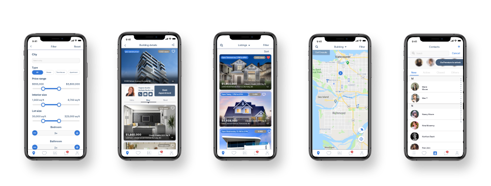
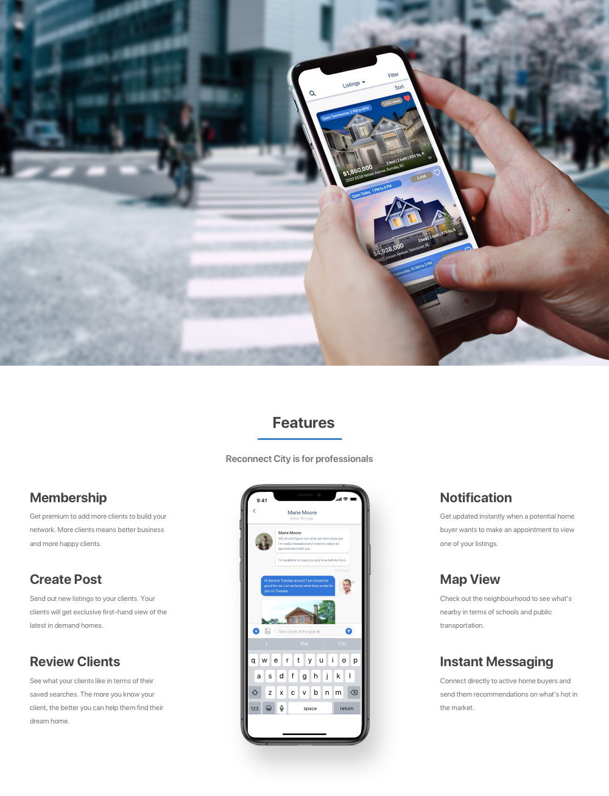
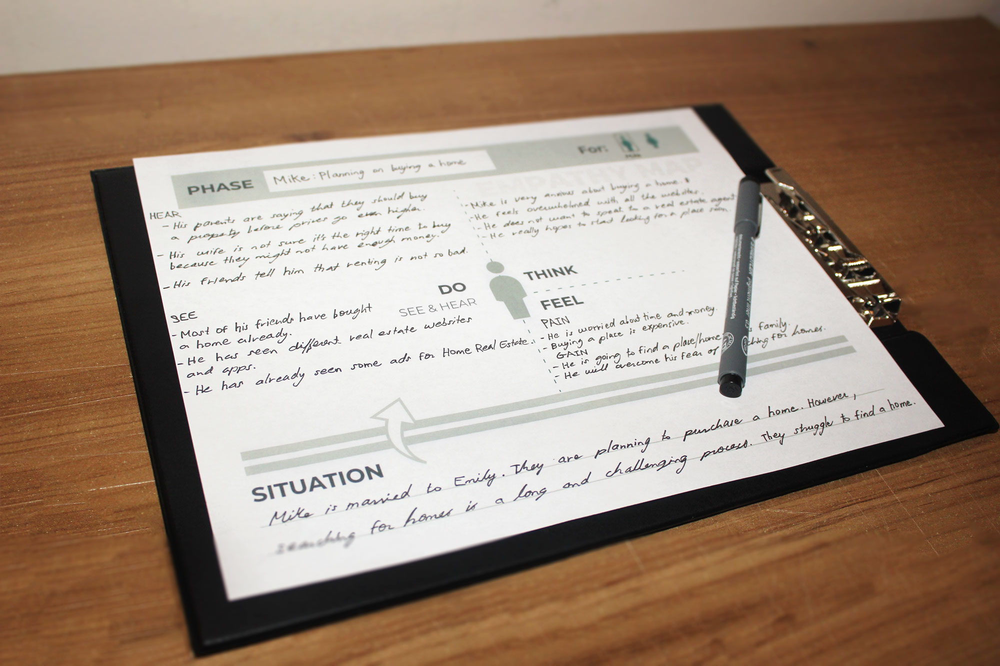
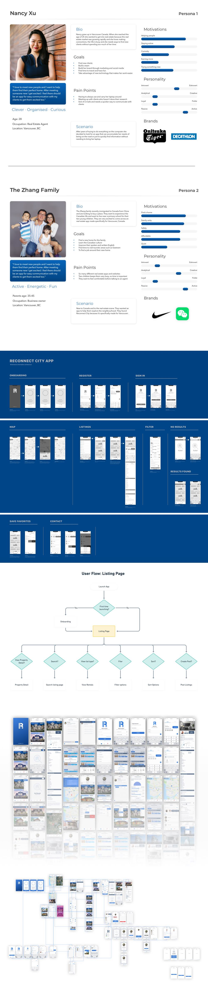
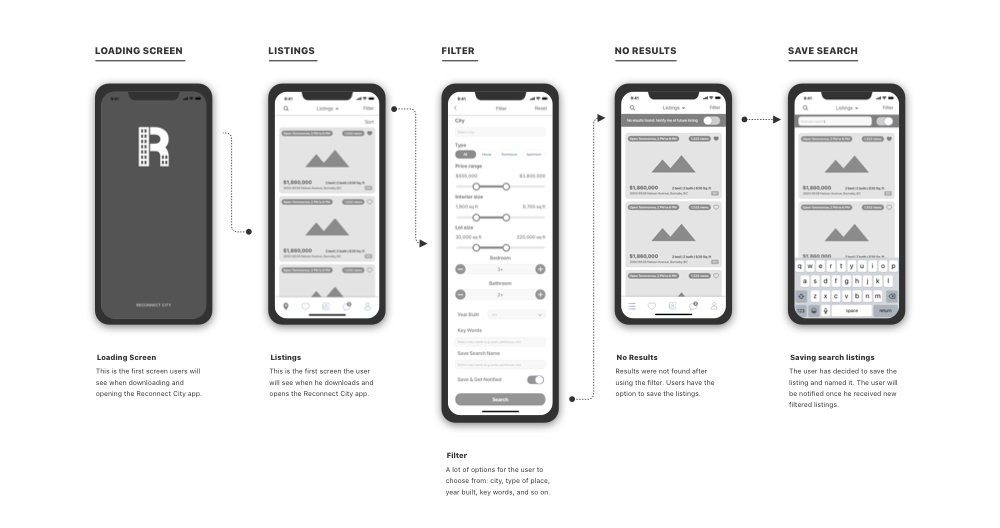

Reconnect City
Overview
Reconnect City is an iOS mobile app designed for real estate agents to connect with home buyers through technology. The business goals was to help real estate agents optimize customer management and to increase potential income.

Research & Problem Definition
1. Understand the Business
In this discovery phase, a stakeholder interview was conducted with the product owner to define the scope of the project. I gathered information about the business goals & objectives, success metrics, contraints, and potential user types and competitors. A simple SWOT analysis also helped determine the company's position in the market.
2. Understand the Users
Qualitative research in the form of interviews were conducted to gather data on our primary users: real estate agents. Demographic and psychographic data provided me understanding of their behavior, needs, fears, and motivations. This investigative approach validated our assumptions, identified the users problems, clarified potential solutions, and generated a list of features for our MVP. Further, I made feature analysis, red route and a feature matrix to help prioritize features. At last, user personas were created as well as user stories.
3. Understand the Market
Market research in the form of a competitor analysis is essential to making well-informed decisions about your product and develop effective marketing strategies. To understand the popularity of real estate apps, it makes sense to take a look at top companies operating in this business niche. For example, a real estate app Apartment List has raised more than $60 million since the moment of its launch in 2011. Another industry leader Zumper received over $31 million of venture investments in four rounds. One more successful real estate platform Zillow has managed to raise as much as $96 million during its five funding rounds. Needless to say, real estate industry is brimming with possibilities for tech entrepreneurs.




Design Process

Design with the user in mind
User-centric and data driven design is key to developing better designs with better user experiences. The goal of content strategy is to create meaningful, cohesive, and engaging content that speaks to the user. The combination of imagery and text and how information is organized, labeled, and structured done in a wireframe is crucial to making the product usable and functional. This process first started with testing users with paper prototyping, then with mid-fidelity prototypes, and last with interactive hi-fidelity prototypes.
Project Learnings
Upon reflection, good market and user research is fundamental to an app's success. User testing throughout the process and defining the MVP will prevent projects from undergoing endless design iterations and prevent more features to be added to the project. Time and budget effects the outcome. Team members come and go, which effects the app's development, so it's paramount that the product owner has multiple designers and developers on hand to carry the project forward.